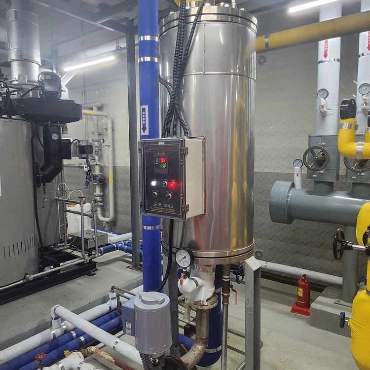
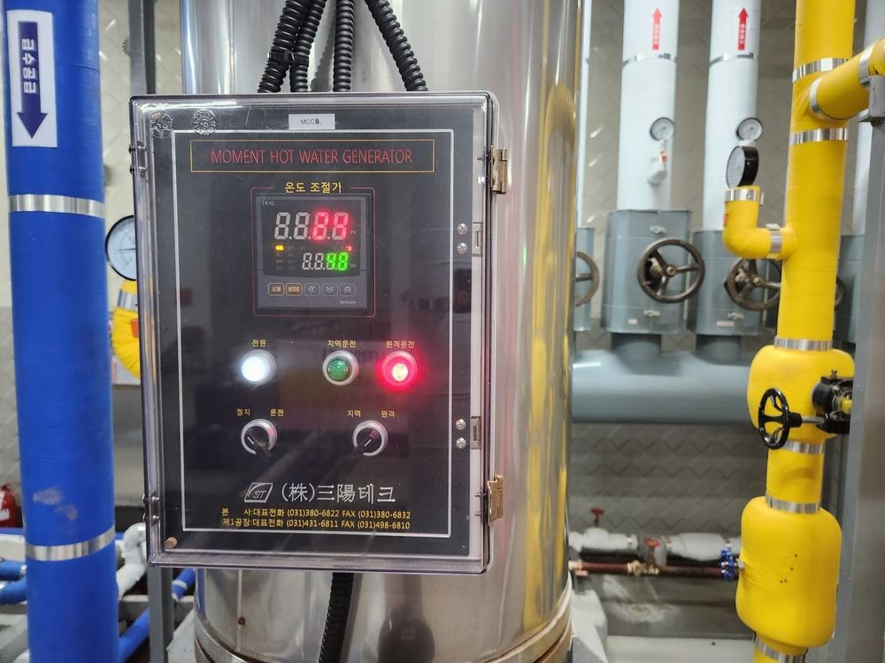
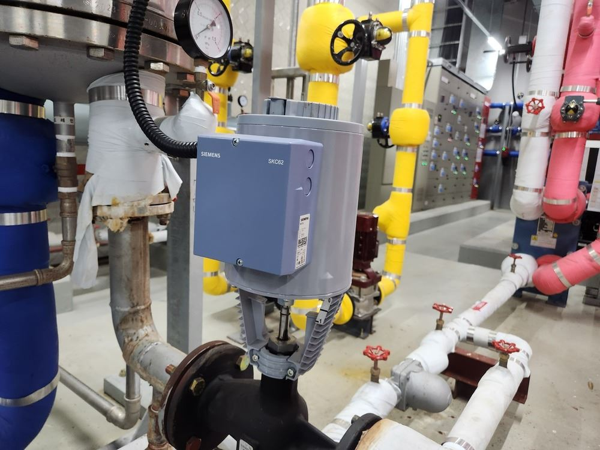

| 사진 |
   |
|---|
| 종류 | 형식 | 제조사 | 모델번호 | A/S 연락처 | 비고 |
|---|---|---|---|---|---|
| 염소 측정장치 | 프로미넌트 | D1Cb | |||
| pH 측정장치 | 프로미넌트 | D1Cc | |||
| 차염 주입펌프 | 프로미넌트 | D1Cc | |||
| pH 주입펌프 | 프로미넌트 | D1Cc |
-
염소 자동 측정장치
[1]염소 자동 측정장치는 수영장, 정수장, 공공 수처리 시설 등에서 물속의 잔류 염소 농도를 자동으로 측정하는 장비입니다.
실시간으로 염소 농도를 감지하여, 수질을 일정하게 유지하고 적정한 살균 효과를 보장하는 역할을 합니다.
1. 염소 자동 측정장치의 주요 기능- 물속의 자유 염소(Free Chlorine), 결합 염소(Combined Chlorine), 총 염소(Total Chlorine) 농도를 자동 감지
- ppm 단위로 수치를 표시하여 정확한 데이터 제공
- 시설의 염소 자동 측정장치는 자유 염소만 측정이 가능하다.
2. 🏊♂️ 수영장 → 법적 기준(자유 염소 0.4~1.0 ppm) 유지
3. 차염 주입펌프와 연동하여 자동으로 수질 조절 가능
4. 수영장, 정수장, 공공시설에서 필수적으로 사용됨
-
pH 자동 측정장치
[1]pH 자동 측정장치는 수영장 시설에서 물의 pH 값을 실시간으로 측정하는 장비입니다.
pH 값이 설정된 범위를 벗어나면 자동으로 pH 주입펌프와 연동하여 pH조절제를 주입하여 수질을 일정하게 유지하는 역할을 합니다.
1. pH 자동 측정장치의 주요 기능- 물속의 pH 값을 실시간으로 감지하고 디지털 디스플레이를 통해 수치를 표시
- 일반적인 🏊♂️ 수영장 → 적정 pH 범위는 7.2~7.6 유지
- pH 주입펌프와 연결하여 산성 또는 알칼리성 용액을 자동 주입하여 pH 값 조절
2. 법적 기준(pH 5.8~8.6)
3. 수영장, 정수장, 공공시설에서 필수적으로 사용됨
-
차염 주입펌프
[1]차염 주입펌프의 주요 기능소독제(차염) 자동 주입
- 수영장 물에 차염(소독제)을 설정된 농도로 자동 투입
- 잔류 염소 농도를 일정하게 유지 (법적 기준: 0.4~1ppm)
- 염소 자동 측정장치와 연동하여 필요할 때만 주입 가능 → 염소 과다 주입 방지
수질 자동 조절 기능
- pH 자동 측정장치 및 차염 측정 장치와 연동 가능
- 염소 농도가 낮아지면 자동으로 차염을 추가 주입
- 염소 농도가 높아지면 차염 주입을 중단하여 과다 투입 방지
-
pH 주입펌프
[1]pH 주입펌프는 수영장 물의 pH를 일정하게 유지하는 장치입니다.
pH 주입펌프의 주요 역할- pH 조절: 알칼리성일 경우 산성 물질 주입, 반대의 경우 알칼리성 물질 주입
- 소독제 효율 최적화: 적정 pH 유지로 살균 효과 극대화
- 사용자 안전 보장: 피부 자극 최소화
-
1️⃣ 유리잔류염소 보정법📋
-
2️⃣ 약품 농도 셋팅 설정법📋
-
3️⃣ 유리잔류염소 센서 설치 방법📋
-
4️⃣ Ph센서 보정법📋
-
5️⃣ ph 셋팅포인트 설정법📋